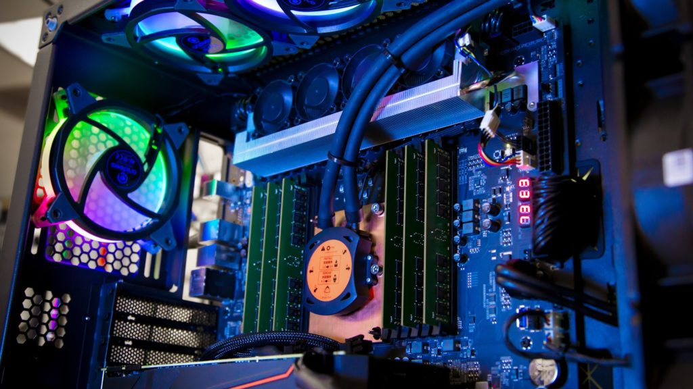

Popis
Software:
"Vše co je v počítači virtuální či neviditelné."

Hardware:
"Vše na co si můžeme sáhnout, celý fyzický počítač."
"Hardware je to do čeho kopnu, když nejde software."
__________________________________________________________________________________________________________________________
Hardware jsou jednotlivé komponenty, ze kterých je počítač postavený, zatím co software jsou programy,které počítač řídí.